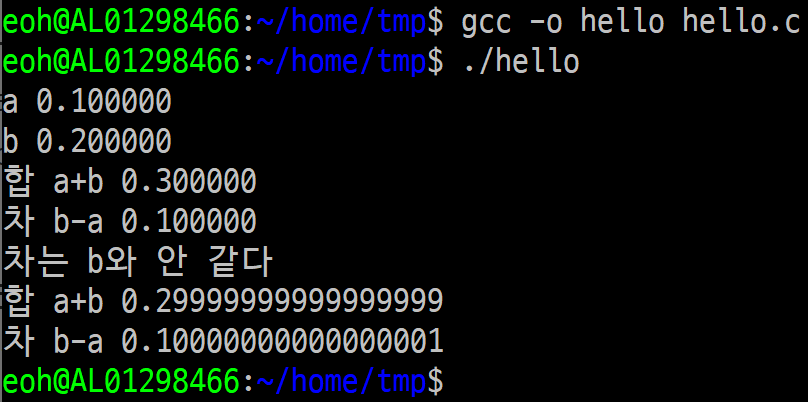
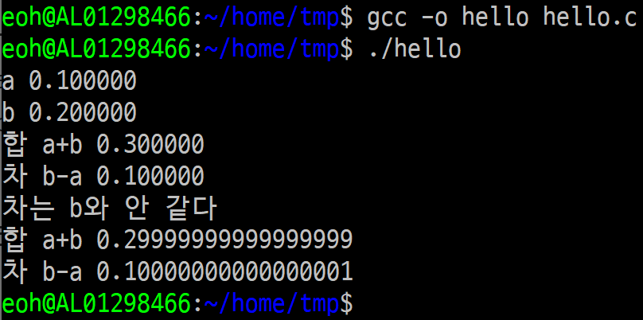

움직이는가 움직이지 않는가
10/28/2020
20년 전에, 아니 그렇게 까지는 오래 된 것 같지는 않고 아마도 한 17년 정도 전에 은행 계정계 시스템을 유닉스 환경에서 다시 구축하는 프로젝트에 참여했었다.
그때는 소위 Mission critical 한 시스템은 IBM 메인 프레임을 쓰는 것이 당연한 시절이었고, 특히 보수적이기로 소문난 금융권에서 핵심 비즈니스인 수신과 여신을 유닉스 기반의 서버로 migration 한다는 결정은 그야말로 그 당시에는 전인 미답, 최 첨단의 선진적 시도였다.
그런데 말이 좋아 최 첨단이지 프로젝트를 진행하는 입장에서 보면 이것 만큼 눈앞이 깜깜해지는 상황도 따로 없다. 왜냐하면 예전에 이걸 해 본 놈이 없다는 것은 곧 이 오류를 본 놈은 내가 처음이란 말과 같고 다시 말해 미리 경험한 누구한테 물어 봐서 해결할 수 있는 문제가 아니라는 말이 된다. 그러므로 어떤 문제가 터지면 어떻하든 스스로 굴러서 해결책을 찾아야 한다는 뜻이다. 요즘 말로 바꿔 말하자면 우리 문제는 스택 오버플로에서 검색이 안되요 란 말이 되겠다.
그때는 소위 Mission critical 한 시스템은 IBM 메인 프레임을 쓰는 것이 당연한 시절이었고, 특히 보수적이기로 소문난 금융권에서 핵심 비즈니스인 수신과 여신을 유닉스 기반의 서버로 migration 한다는 결정은 그야말로 그 당시에는 전인 미답, 최 첨단의 선진적 시도였다.
그런데 말이 좋아 최 첨단이지 프로젝트를 진행하는 입장에서 보면 이것 만큼 눈앞이 깜깜해지는 상황도 따로 없다. 왜냐하면 예전에 이걸 해 본 놈이 없다는 것은 곧 이 오류를 본 놈은 내가 처음이란 말과 같고 다시 말해 미리 경험한 누구한테 물어 봐서 해결할 수 있는 문제가 아니라는 말이 된다. 그러므로 어떤 문제가 터지면 어떻하든 스스로 굴러서 해결책을 찾아야 한다는 뜻이다. 요즘 말로 바꿔 말하자면 우리 문제는 스택 오버플로에서 검색이 안되요 란 말이 되겠다.
그 때 겪었던 문제 중에 아직 기억에 남는 것은 "이자 계산 결과가 다르다" 사건이다. 그때 환경은 IBM 메인프레임에서 코볼로 짜여진 예금 관련 프로그램을 유닉스 위에서 c로 포팅하는 일이었다. 복잡해 보여도 이자율이야 정해져 있는 것이고 예금된 금액에다 이자율을 곱해서 기간 동안 합을 구하면 되는 터라 별 문제될 거리가 없다고 생각했다. 그런데 어느 정도 구현한 다음 결과를 검증하기 위해 여러 값을 기존 프로그램과 새로 만든 것에 같이 돌린 다음 결과를 비교했더니,
값이 서로 다르다.
은행에 맡긴 돈에는 이자가 붙는데 은행 시스템을 개편했다고 고객에게 예전과 다른 금액을 줄 수는 없는 것이고, 어떻하든 왜 이렇게 다른지 이유를 찾아 내야만 했다. 아니 예전과 똑같은 숫자를 만들어 내야 했다.
특히 프로젝트 진행 중에도 계속
"아니, 잘 검증된 외산 시스템을 쓰지 왜 듣도 보도 못한 국내 회사에 이런 중요한 일을 맡겼냐는 말이지. 문제 생기면 얘네들이 해결할 능력이나 있겠어?"
란 challenge 를 받는 게 다반사였고 행여나 조금의 흠이라도 잡히면 항시라도 프로젝트가 엎어질 수 있다 란 압박을 느낄 수 있던 터라 더욱 더 위기 의식이 들었다.
몇 번을 손으로도 계산해 보고 프로그램을 다시 짜서 검산해 보고 마지막으로 다시 이자율 계산 식을 확인해도 어디 틀린 곳이 없었다. 그런데 은행 시스템에서 같은 데이터로 계산하면 비슷하긴 해도 정확히 동일한 값이 나오는 법이 없었다. 웃긴 점은 이 원본 코볼 프로그램도 새로 작성한 c 프로그램과 같이 몇 번이고 샅샅히 뒤져 봤지만 동일한 로직으로 작성되어 있었다는 것이 확실했다는 것이다.
이쯤 되면 대충 눈치챈 사람도 있을 듯 한데, 원인은 코볼이 워낙 할배 언어라 IEEE 754 부동소수점 을 사용하지 않고 그냥 쌩으로 고정 소수점 - 지금 기억으로는 소수점 아래 2자리인가 4자리인가 - 를 사용했었던 것에 있었다. 고정 소수점을 가진 숫자를 가지고 계산한 값과 c 의 double 변수에 넣고 계산한 값을 비교했으니 값이 서로 '서르 사맛디 아니할쎄' 밖에 없었던 것이다. 어떻게 보면 코볼 방식이 더 확실한 면도 있는 것이 전자 계산기로 계산해 보면 이 쪽이 확실히 손으로 값을 재현 가능하다 란 것을 알 수 있다. 약간 논점 이탈이지만 이런 경험을 하게 되면 ML 의 결과에 대해 의심을 할 수 밖에 없다.
부동 소수점이 어떤 문제를 일으키는지 아래의 경우를 보자.
부동 소수점이 어떤 문제를 일으키는지 아래의 경우를 보자.
#include <stdio.h>
int main(int argc, char** argv){
long double a = 0.1l;
long double b = 0.2l;
printf ("a %Lf\n", a);
printf ("b %Lf\n", b);
printf ("합 a+b %Lf\n", a+b);
printf ("차 b-a %Lf\n", b-a);
if(b-a == a){
printf ("차는 b와 같다\n");
}else{
printf ("차는 b와 안 같다\n");
printf ("합 a+b %.17Lf\n", a+b);
printf ("차 b-a %.17Lf\n", b-a);
}
}
a 는 0.1 이고 b 는 0.2 다. 합을 구하면 0.3 이라야 하고 차는 0.1 이 되어야 한다.
그러면 당연히 if(b-a == b) 구문은 참이므로 "차는 b와 같다" 란 결과가 나올 것이다. 아니, 나와야 한다. 하지만 결과는?

아, 그렇군요.
뭐 어쨌든 해결은 해야되는 것이라 사칙연산을 코볼의 유효자리에 맞추어 계산해 주는 함수와 코볼이 표현하는 유효자리수로 변경해 주는 함수를 만들었던 것으로 기억한다. 그리고 제일 웃기는 함수는 double 변수 두 개를 서로 비교해 주는 놈이었는데 이건 두 변수의 차가 코볼의 정밀도 안에서 비교가능한지를 보고 '대충' 같다, 크다, 작다 를 반환하는 것이었다.
'대충' 이라니 야이 뭐 이런 멍멍이 같은 일이 다 있는가 싶겠지만 이런 작지만 소중한 엔지니어링을 추가함으로써 우리는
거룩하신 IBM 메인프레임 위헤서 실재하시는 흠 없으신 코볼 프로그램이 반환하는 성스러운 숫자와 "동일한" 숫자를 반환하는 유닉스 c 프로그램을 가질 수 있게 되었다.
그러면 당연히 if(b-a == b) 구문은 참이므로 "차는 b와 같다" 란 결과가 나올 것이다. 아니, 나와야 한다. 하지만 결과는?

아, 그렇군요.
뭐 어쨌든 해결은 해야되는 것이라 사칙연산을 코볼의 유효자리에 맞추어 계산해 주는 함수와 코볼이 표현하는 유효자리수로 변경해 주는 함수를 만들었던 것으로 기억한다. 그리고 제일 웃기는 함수는 double 변수 두 개를 서로 비교해 주는 놈이었는데 이건 두 변수의 차가 코볼의 정밀도 안에서 비교가능한지를 보고 '대충' 같다, 크다, 작다 를 반환하는 것이었다.
'대충' 이라니 야이 뭐 이런 멍멍이 같은 일이 다 있는가 싶겠지만 이런 작지만 소중한 엔지니어링을 추가함으로써 우리는
거룩하신 IBM 메인프레임 위헤서 실재하시는 흠 없으신 코볼 프로그램이 반환하는 성스러운 숫자와 "동일한" 숫자를 반환하는 유닉스 c 프로그램을 가질 수 있게 되었다.
한참 쓰다가 보니 그래서 결론은 무엇인가 란 존재론적 자성이 들게 되어 '대충' 덧붙인다.
- 그 프로젝트는 결국 엎어졌다. 프로젝트를 발주한 금융 기관 내부에서 인사 이동이 일어나자 마자 '국산은 못 믿는다 파'가 승리를 거두어 대충 짐을 싸야 했던 것으로 기억한다.
- 내게는 부동 소수점이 어떤 의미인지 몸으로 느낄 수 있었던 계기였다. 실은 책으로 읽어서 다 안다고 생각했지만 실제로 이게 숫자가 왜 서로 틀린가를 알아내는데 그 지식은 하나도 도움이 되지 않았고 결국 인생은 근사로구나 란 깨달음을 얻게 된 기회가 되었다.
- 아마 그때 부터 분수를 표현할 수치 표현형을 만들고 싶다는 생각을 했었던 것 같다. 누구든 ... 은전 한 닢 을 참고하자